Now Playing:
Project 2: Treasure Chest
By: Jared Dewey 9/30/2025
Marooned with no way home, a castaway finds a washed up treasure chest on his island! The winds are bringing change of luck, but is it for his better or worse?
The Original:
|
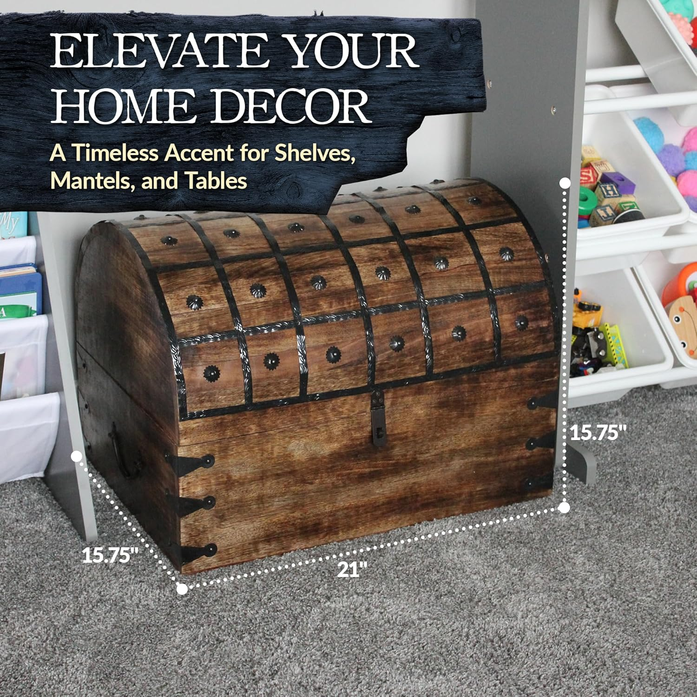
|
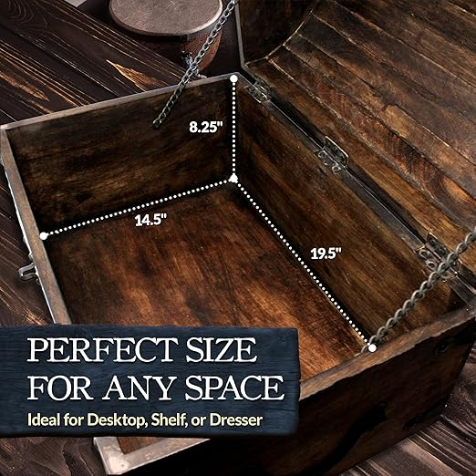
|

|
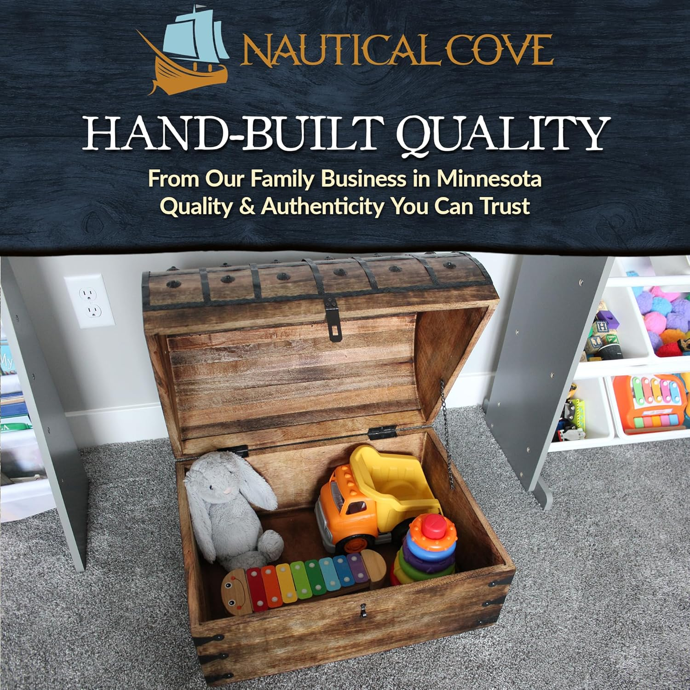
|
Some Other Angles:
|
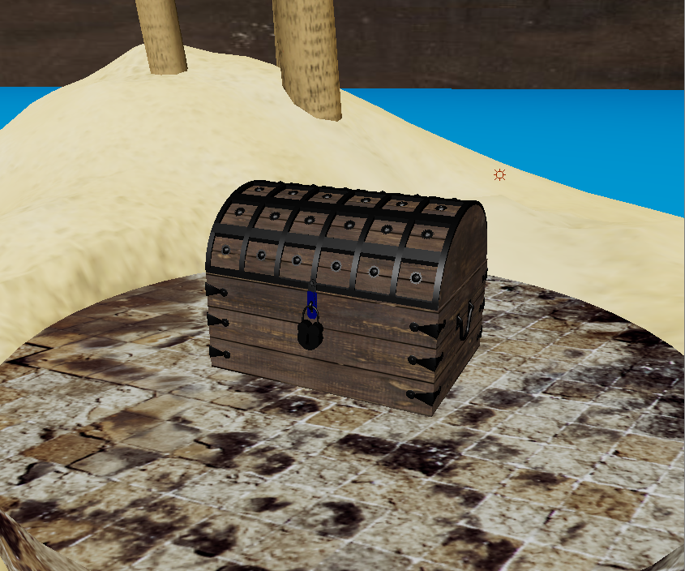
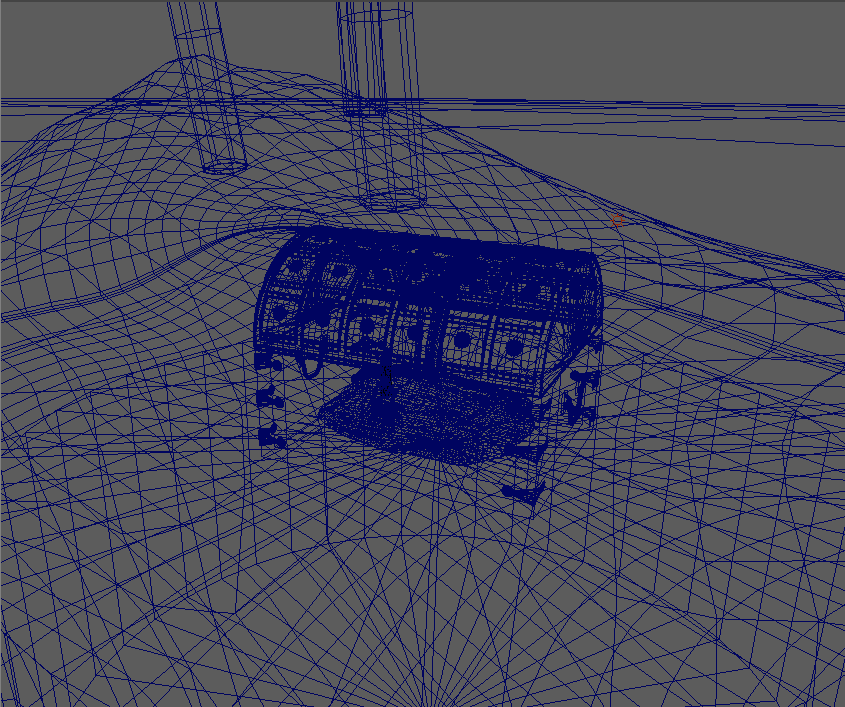
|
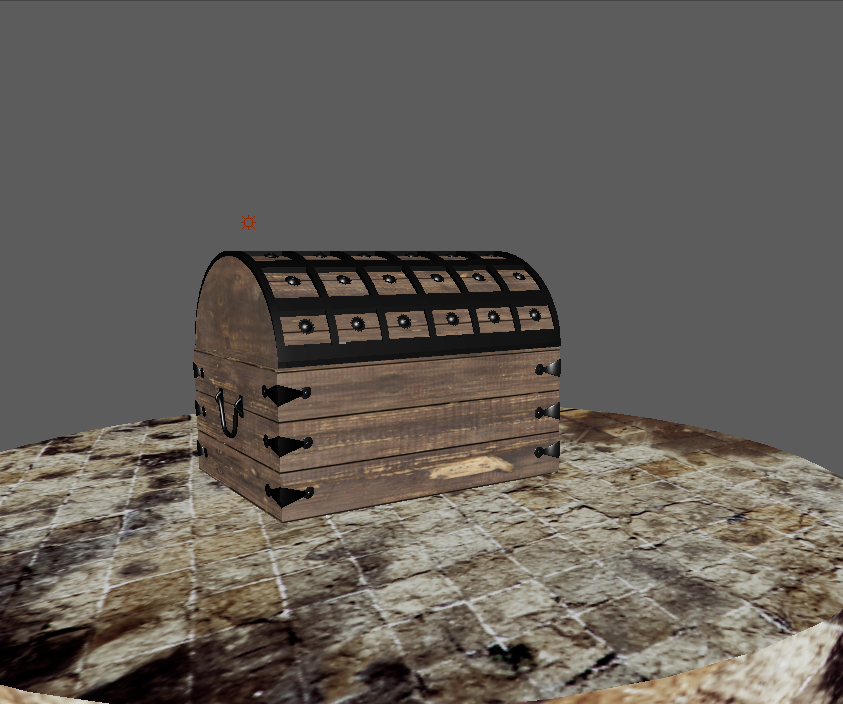
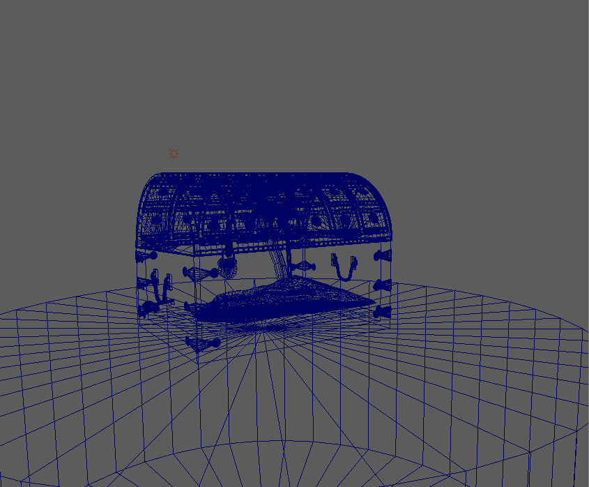
|
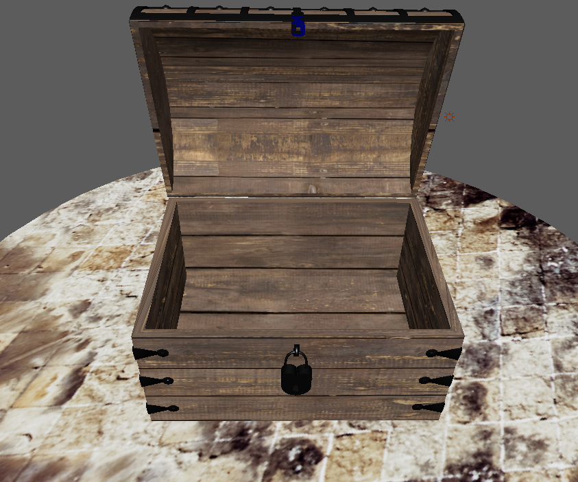
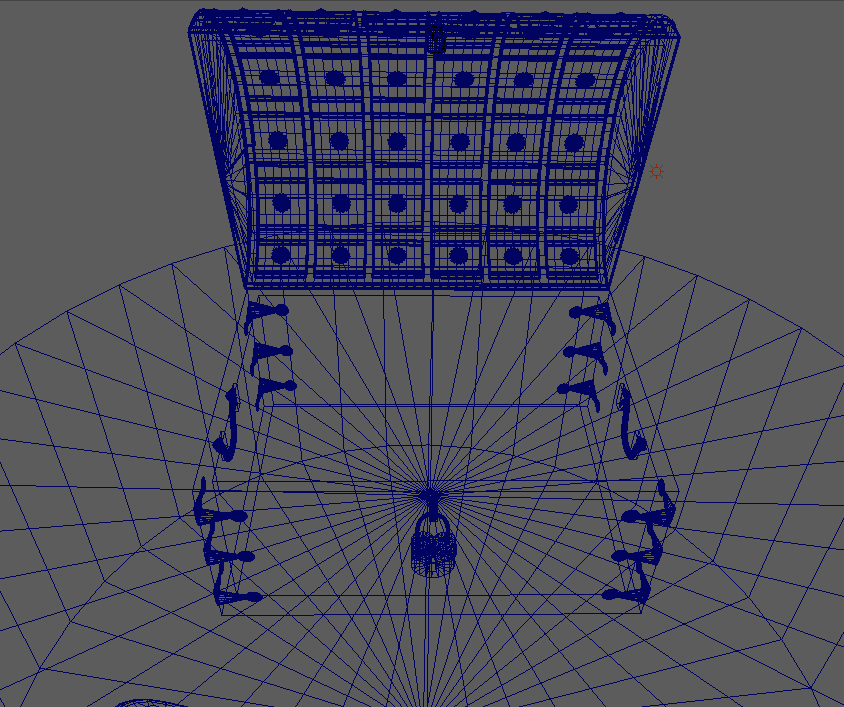
|
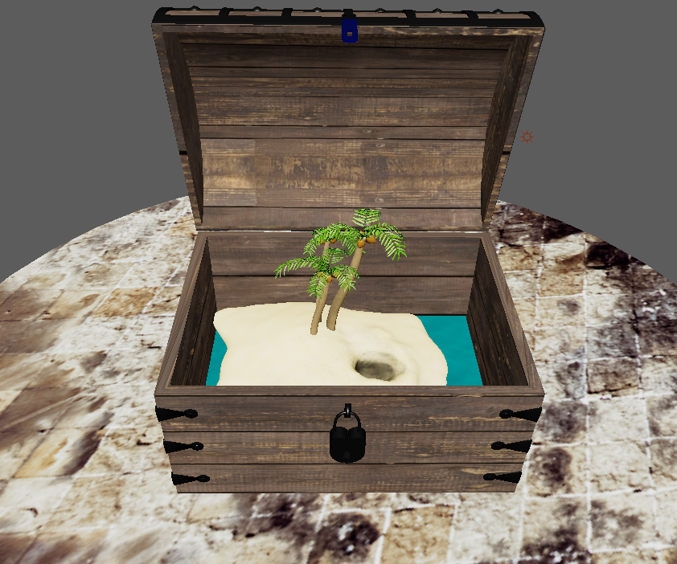

|
Project 1: Solar System / Martians New Home
By: Jared Dewey 9/16/2025
Part 1: Solar System
This nature documentary follows the sun, earth, and all the planets in their natural environment: outer space!
Part 2: Martians New Home
A thrilling sequel to the critically acclaimed "Solar System", the Martian is on a search for a new home!
Changes:
|
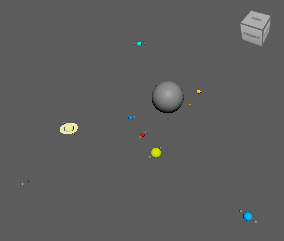
|
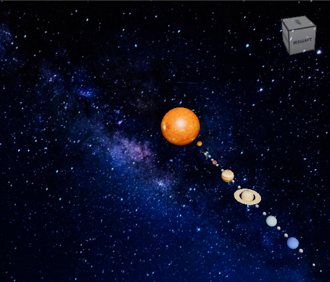
(Planet Pixel Emporium, Wikimedia) |
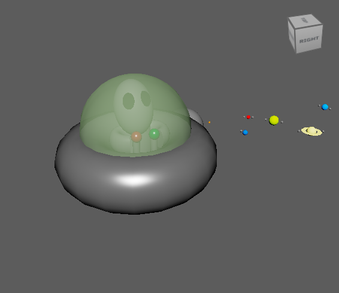
|